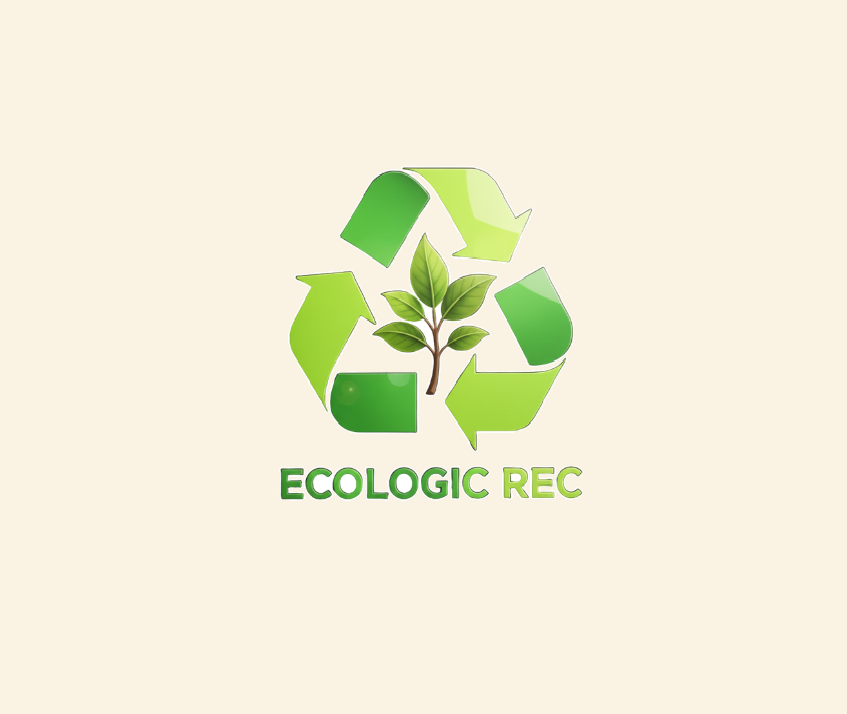

Educação Ambiental
Promovemos a conscientização sobre a importância da preservação do meio ambiente por meio de recursos didáticos e dicas ecológicas.
Saiba MaisDicas de Sustentabilidade


Doação Comunitária
Contribua para a preservação do meio ambiente doando itens que podem ter uma nova utilidade na comunidade.
Fazer uma Doação